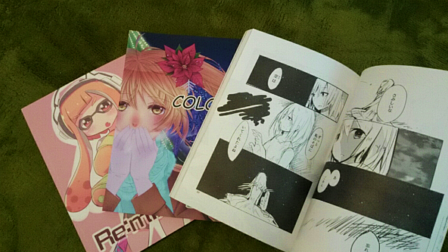

Pコミってどんなサークル？

Pコミは、2016年4月より立命館大学琵琶湖漫画研究会から独立した、立命館大学大阪いばらきキャンパスのサークルです。
年に1回以上、みんなの原稿を集めて会誌を作ります。
外部からの依頼もお受けすることもあります。
学園祭ではB3サイズのイラストパネルを作り、展示する予定です。
そこではお客さんの投票によってイラストの人気順位がつけられます。（こわい）
加えて自己紹介本の発行や合宿や飲み会などなど。。。
全力で楽しめる機会を満喫しています。
基本的にイベントに強制することはありません。参加したいときに好きなイベントに参加する、自主性に任せたスタンスです。
絵が上達したい人も、まったりとサークルの雰囲気を楽しみたい人も、あまり絵を描かない人も、自分のペースで活動することができます。
日々の活動
部会時間：毎週月・水・金の16:20～19:30（開講日のみ）
部会場所：指定教室（詳しくはお問い合わせください）
基本的にまったりと集まっています。参加不参加は自由で、欠席の場合でも特に連絡は要りません。
小教室で原稿を書いたり、メンバー同士で雑談したりしています。
義務ってあるの？
・会費の支払（年2回）
・4月の自己紹介本への参加
・総会の参加（委任状提出あり）
を義務とさせて頂いております。
それ以外の活動は参加自由です。でも積極的に参加してくれると嬉しいなっ！
その他、Pコミでできること
サークル主催ではない、イラスト・漫画本を有志で発行することもあります。
作りたい本があれば身内で原稿を集めて作るのも楽しいですよ。
コミックマーケットなどの同人イベントに参加して、自分の作った漫画本を頒布する先輩もいます。
同人イベントに参加しようか迷っている人は、気軽に相談してくださいね。
あと暇だったらそこらへんの先輩がイラスト講座を勝手に開いたりもします。役立つこと間違いなし。
© Painting&Comics_ritsumeikan.